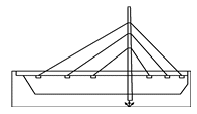
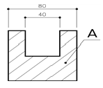
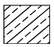
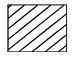
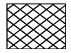
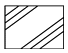

전산응용건축제도기능사 (2013-01-27 기출문제)
1과목: 건축구조
1. 다음 중 철골구조에서 H자 형강보의 플랜지 부분에 커버 플레이트를 사용하는 가장 주된 목적은?
- H형강의 부식을 방지하기 위해서
- 집중하중에 의한 전단력을 감소시키시 위해서
- 덕트 배관 등에 사용할 수 있는 개구부분을 확보하기 위해서
- 휨내력의 부족을 보충하기 위해서
(정답률: 61%)

2. 블록구조에 관한 설명으로 옳지 않은 것은?
- 블록구조는 지진 등과 같은 수평력에 약하지만, 보강철근을 사용하면 수평력에 견딜 수 있는 힘이 증가한다.
- 보강블록조는 뼈대를 철근콘크리트구조나 철골구조로 하고 칸막이벽으로서는 블록을 쌓는 방식이다.
- 거푸집블록조는 살두께가 얇고 속이 비어 있는 ㄱ자형, ㄷ자형, T자형, ㅁ자형으로 블록에 철근을 배근하여 콘크리트를 채워 벽체를 만드는 방식이다.
- 내력벽으로 둘러싸인 부분의 바닥 면적은 80m2를 넘지 않도록 한다.
(정답률: 56%)
3. 다음 그림은 케이블을 이용한 구조시스템 중 하나이다. 서해대교에서 볼 수 있는, 그림과 같은 다리의 구조형식을 무엇이라 하는가?

- 현수교
- 사장교
- 아치교
- 게르버교
(정답률: 65%)
4. 창호 종류 중 방풍을 목적으로 풍소란을 설치하는 것은?
- 미서기문
- 양판문
- 플러시문
- 회전문
(정답률: 60%)
5. 건물의 외벽에서 지붕 머리를 연결하고 지봉보를 받아 지부의 하중을 기둥에 전달하는 가로재는?
- 토대
- 처마도리
- 서까래
- 층도리
(정답률: 63%)
6. 목구조 접합부와 그 접합부에 사용되는 철물이 적절하게 연결되지 않은 것은?
- 왕대공과 평보 - 감잡이쇠
- 평기둥과 층도리 - 띠쇠
- 큰보와 작은보 - 안장쇠
- 토대와 기둥 - 앵커 볼트
(정답률: 59%)
7. 막구조 중 막의 무게를 케이블로 지지하는 구조는?
- 공조막구조
- 현수막구조
- 공기막구조
- 하이브리드 막구조
(정답률: 84%)
8. 구조물의 지점의 종류 중 이동과 회전이 불가능한 지점 상태로 반력은 수평반력과 수직반력 그리고 모멘트 반력이 생기는 것은?
- 회전단
- 이동단
- 활절
- 고정단
(정답률: 72%)
9. 다음 중 상부에서 오는 하중을 받지 않는 비내력벽은?
- 조적식블록조
- 보강블록조
- 거푸집블록조
- 장막벽블록조
(정답률: 60%)
10. 다음 중 계단의 모양에 따른 분류에 속하지 않는 것은?
- 곧은 계단
- 돌음 계단
- 꺽인 계단
- 피난 계단
(정답률: 80%)
11. 조적조 공간벽의 외부에서 보이는 벽에 많이 쓰이는 조적방법은?
- 길이 쌓기
- 마구리 쌓기
- 옆세워 쌓기
- 세워 쌓기
(정답률: 54%)
12. 벽의 종류와 역할에 대하여 가장 바르게 연결한 것은?
- 공간벽 - 벽돌 절감
- 전단벽 - 테두리보 설치용이
- 플라잉 월(flying wall) - 횡력 보강
- 부축벽(buttress) - 기둥 수량 감소
(정답률: 58%)
13. 공간 벽돌 쌓기에서 표준형 벽돌로 바깥벽은 0.5B, 공간 80㎜, 안벽 1.0B로 할 때 총 벽체 두께는?
- 290㎜
- 310㎜
- 360㎜
- 380㎜
(정답률: 76%)
14. 다음 중 인장링이 필요한 구조는?
- 트러스
- 막구조
- 절판구조
- 돔구조
(정답률: 57%)
15. 강구조의 기둥 종류 중 앵글·채널 등으로 대판을 플랜지에 직각으로 접합한 것은?(오류 신고가 접수된 문제입니다. 반드시 정답과 해설을 확인하시기 바랍니다.)
- H형강기둥
- 래티스기둥
- 격자기둥
- 강관기둥
(정답률: 58%)
16. 지붕물매의 결정 요소가 아닌 것은?
- 건축물 용도
- 처마돌출 길이
- 간사이 크기
- 지붕이기 재료
(정답률: 47%)
17. 철근콘크리트구조에서 철근의 피복두께를 가장 크게 해야 할 곳은?
- 기둥
- 보
- 기초
- 계단
(정답률: 65%)
18. 바닥판의 주근을 연결하고 콘크리트의 수축, 온도변화에 의한 열응력에 따른 균열을 방지하는데 유효한 철근을 무엇이라 하는가?
- 굽힘 철근
- 늑근
- 띠철근
- 배력근
(정답률: 51%)
19. 벽돌 벽체 내쌓기의 내미는 한도는?
- 1.0B
- 1.5B
- 2.0B
- 2.5B
(정답률: 79%)
20. 건물의 기초전체를 하나의 판으로 구성한 기초는?
- 줄기초
- 독립기초
- 복합기초
- 온통기초
(정답률: 83%)
2과목: 건축재료
21. 재료에 외력을 가했을 때 작은 변형만 나타나도 파괴되는 성질을 의미하는 것은?
- 전성
- 취성
- 탄성
- 연성
(정답률: 85%)
22. 다음 중 재료와 그 사용용도의 연결이 옳지 않은 것은?
- 테라죠 - 벽, 바닥의 수장재
- 트래버틴 - 내벽 등의 수장재
- 타일 - 내외벽, 바닥의 수장재
- 테라코타 - 흡음재
(정답률: 81%)
23. 벽 또는 천장 재료에 요구되는 성질과 가장 거리가 먼 것은?
- 열전도율이 커야 한다.
- 외관이 아름다워야 한다.
- 가공이 용이해야 한다.
- 방음 성능이 좋아야 한다.
(정답률: 83%)
24. 유리에 함유되어 있는 성분 가운데 자외선을 차단하는 중성분이 되는 것은?
- 황산나트륨(Na2S04)
- 탄산나트륨(Na2CO3)
- 산화제2철(Fe2O3)
- 산화제1철(FeO)
(정답률: 62%)
25. 한국산업표준(KS)에 규정되어 있지 않은 것은?
- 제품의 품질
- 제품의 모양
- 제품의 시험법
- 제품의 생산자
(정답률: 78%)
26. 석재의 표면마감 방법이 나머지 셋과 다른 것은?
- 정다듬
- 혹두기
- 버너마감
- 도드락 다듬
(정답률: 80%)
27. 시멘트의 강도에 영향을 주는 주요 요인이 아닌 것은?
- 분말도
- 비빔장소
- 풍화정도
- 사용하는 물의 양
(정답률: 87%)
28. 다음 중 복층유리(pair glass)의 특징으로 옳지 않은 것은?
- 흡음
- 단열
- 결로방지
- 방음
(정답률: 66%)
29. 목재 방부제 중 방부력이 우수하고 염가이나 도포부분이 갈색이고 냄새가 강하여 실내에서 사용할 수 없는 것은?
- 콜타르
- 불화소다
- 크로오소트
- 염화아연
(정답률: 55%)
30. 한중 또는 수중, 긴급공사를 시공할 때 가장 적합한 시멘트는?
- 보통 포틀랜드 시멘트
- 중용열 포틀랜드 시멘트
- 백색 포틀랜드 시멘트
- 조강 포틀랜드 시멘트
(정답률: 73%)
31. 다음 금속재료 중 X선 차단성이 가장 큰 것은?
- 납
- 구리
- 철
- 아연
(정답률: 71%)
32. 다음 건축재료 중 천연재료에 속하는 것은?
- 목재
- 철근
- 유리
- 고분자재료
(정답률: 91%)
33. 콘크리트의 장점이 아닌 것은?
- 압축 강도가 크다.
- 자체 하중이 작다.
- 내화성이 우수하다.
- 내구적이다.
(정답률: 80%)
34. 재료의 응력-변형도 관계에서 기해진 외부의 힘을 제거하였을 때 잔류변형 없이 원형으로 되돌아오는 경계점은?
- 인장강도점
- 탄성한계점
- 상위항복점
- 하위항복점
(정답률: 89%)
35. 바닥 재료의 분류 중 유기질 재료에 속하지 않는 것은?
- 고무계
- 유지계
- 금속계
- 섬유계
(정답률: 63%)
36. 포졸란(pozzolan)을 사용한 콘크리트의 특징 중 옳지 않은 것은?
- 수밀성이 높아진다.
- 수화 발열량이 적어진다.
- 경화작용이 늦어지므로 조기 강도가 낮아진다.
- 블리딩이 증가된다.
(정답률: 57%)
37. 구리 및 구리 합금에 대한 설명 중 옳지 않은 것은?
- 구리와 주석의 합금을 황동이라 한다.
- 구리는 맑은 물에서는 녹이 나지 않은나 염수(鹽水)에서는 부식된다.
- 청동은 황동과 비교하여 주조성이 우수하고 내식성도 좋다.
- 구리는 연성이고 가공성이 풍부하여 판재, 선, 봉 등으로 만들기가 용이하다.
(정답률: 63%)
38. 회반죽이 공기 중에서 굳어질 때 필요한 물질은?
- 산소
- 수증기
- 탄산가스
- 질소
(정답률: 76%)
39. 한국산업표준(KS)의 분류기호 중 건축을 나타내는 것은?
- K
- W
- E
- F
(정답률: 84%)
40. 가공이 용이하고 내식성이 뛰어나 계단 논슬립, 창문의 레일, 장식 철물 및 나사, 볼트, 너트 등에 널리 사용되는 것은?
- 황동
- 구리
- 알루미늄
- 연철
(정답률: 44%)
3과목: 건축계획 및 제도
41. 스킵플로어형 공동주택에 관한 설명으로 옳지 않은 것은?
- 구조 및 설비계획이 용이하다.
- 주택 내의 공간의 변화가 있다.
- 통풍·채광의 확보가 용이하다.
- 엘리베이터의 효율적 운행이 가능하다.
(정답률: 47%)
42. 세정밸브식 대변기에 관한 설명으로 옳지 않은 것은?
- 대변기의 연속사용이 가능하다.
- 일반 가정용으로는 거의 사용되지 않는다.
- 세정음은 유수음도 포함되기 때문에 소음이 크다.
- 레버의 조작에 의해 낙차에 의한 수압으로 대변기를 세척하는 방식이다.
(정답률: 54%)
43. 건축물의 묘사와 표현 방법에 관한 설명으로 옳지 않은 것은?
- 일반적으로 건물의 그림자는 건물 표면의 그늘보다 밝게 표현한다.
- 윤곽선을 강하게 묘사하면 공간상의 입체를 돋보이게 하는 효과가 있다.
- 각종 배경 표현은 건물의 배경이나 스케일, 그리고 용도를 나타내는데 꼭 필요할 때만 적당히 표현한다.
- 그늘과 그림자는 물체의 위치, 보는 사람의 위치, 빛의 방향, 그림자가 비칠 바닥의 형태에 의하여 표현을 달리한다.
(정답률: 72%)
44. 실내 공기오염도의 종합적 지표로서 이용되는 오염물질은?
- 산소
- 질소
- 이산화탄소
- 아황산가스
(정답률: 90%)
45. 지각적으로는 구조적 높이감을 주며 심리적으로는 상승감, 존엄성 등의 느낌을 주는 선의 종류는?
- 곡선
- 사선
- 수평선
- 수직선
(정답률: 87%)
46. 에스컬레이터의 구성 요소 중 핸드레일 가이드 측면과 만나고 상부 커버를 형성하는 난간의 가로 요소는?
- 뉴얼
- 스커트
- 난간테크
- 내부패널
(정답률: 80%)
47. A2 제도지의 도면에 테두리를 만들 때 여백을 최소한 얼마나 두어야 하는가? (단, 도면을 묶지 않을 경우)
- 5㎜
- 10㎜
- 15㎜
- 20㎜
(정답률: 70%)
48. 다음 중 기초 평면도 작도시 가장 나중에 이루어지는 작업은?
- 각 부분의 치수를 기입한다.
- 기초 평면도의 축척을 정한다.
- 기초의 모양과 크기를 그린다.
- 평면도에 따라 기초 부분의 중심선을 긋는다.
(정답률: 87%)
49. 다음 도면에서 A가 가르키는 선의 종류로 옳은 것은?

- 중심선
- 해칭선
- 절단선
- 가상선
(정답률: 85%)
50. 다음 중 부엌에 설치하는 작업대의 높이로 가장 적절한 것은?
- 450mm
- 600mm
- 850mm
- 1000mm
(정답률: 75%)
51. 다음 중 동바리마루 바닥그리기와 관련이 없는 부재는?
- 장선
- 멍에
- 달대
- 동바리
(정답률: 62%)
52. 건물의 일조 조절을 위해 사용되는 것이 아닌 것은?
- 차양
- 루버
- 발코니
- 플랜지
(정답률: 59%)
53. 건물벽 직각 방향에서 건물의 겉모습을 그린 도면은?
- 입면도
- 단면도
- 평면도
- 배치도
(정답률: 78%)
54. 다음의 자동화재 탐지설비의 감지기 중 연기감지기에 해당하는 것은?
- 광전식
- 차동식
- 정온식
- 보상식
(정답률: 67%)
55. 주택의 주거공간을 공동공간과 개인공간으로 구분할 경우, 다음 중 개인공간에 해당하지 않는 것은?
- 서재
- 침실
- 작업실
- 응접실
(정답률: 85%)
56. 증기난방 방식에 관한 설명으로 옳지 않은 것은?
- 예열시간이 온수난방에 비해 짧다.
- 온수난방에 비해 한랭지에서 동결의 우려가 적다.
- 증발 잠열을 이용하기 때문에 열의 운반 능력이 크다.
- 온수난방에 비해 부하 변경에 따른 방열량 조절이 용일하다.
(정답률: 60%)
57. 창호의 재질·용도별 기호의 연결이 옳지 않은 것은?
- WW : 목재 창
- PD : 합성수지 문
- AW : 알루미늄합금 창
- SS : 스테인리스 스틸 셔터
(정답률: 69%)
58. 주택에서 부엌의 일부에 간단한 식탁을 설치하거나 식당과 부엌을 하나로 구성한 형태는?
- 리빙 키친
- 다이닝 키친
- 리빙 다이닝
- 다이닝 테라스
(정답률: 88%)
59. 건축제도에서 석재의 재료 표시 기호(단면용)로 옳은 것은?




(정답률: 74%)
60. 건축공간에 관한 설명으로 옳지 않은 것은?
- 인간은 건축공간을 조형적으로 인식한다.
- 내부공간은 일반적으로 벽과 지붕으로 둘러싸인 건물 안쪽의 공간을 말한다.
- 외부공간은 자연 발생적인 것으로 인간에 의해 의도적으로 만들어지지 않는다.
- 공간을 편리하게 이용하기 위해서는 실의 크기와 모양 등이 적당해야 한다.
(정답률: 87%)